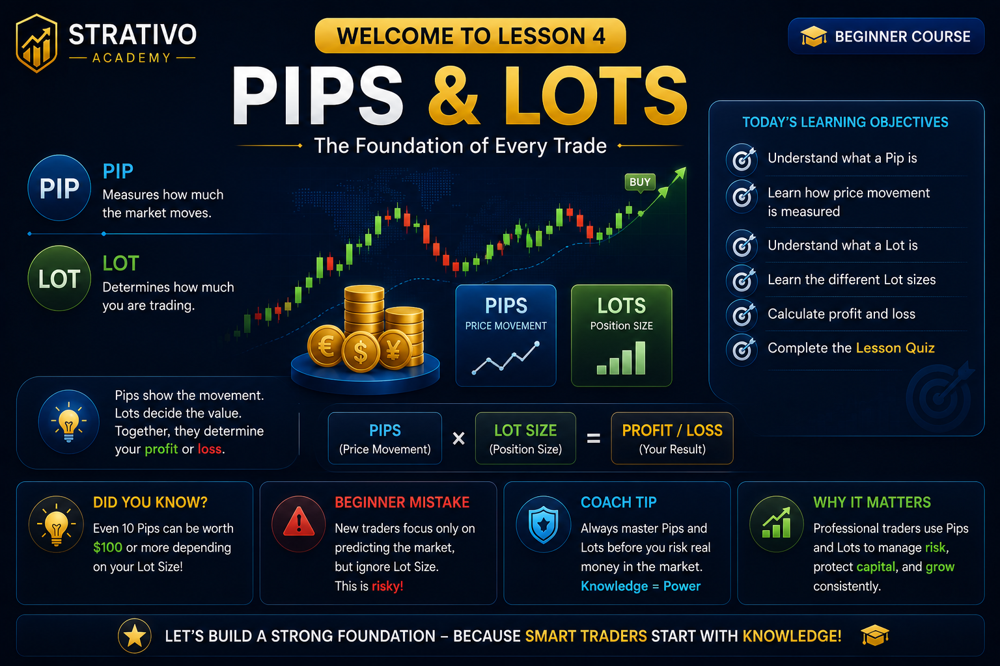
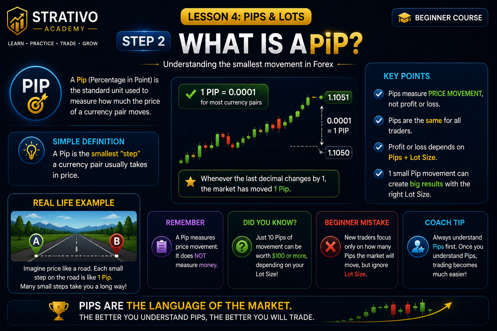
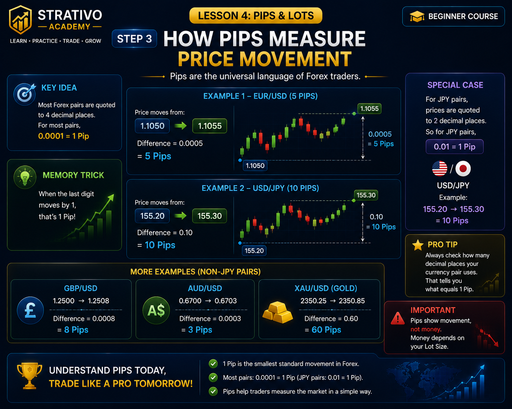
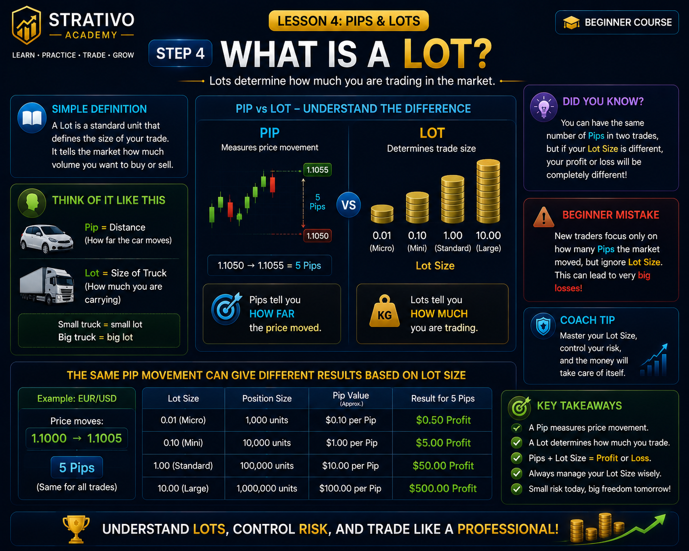
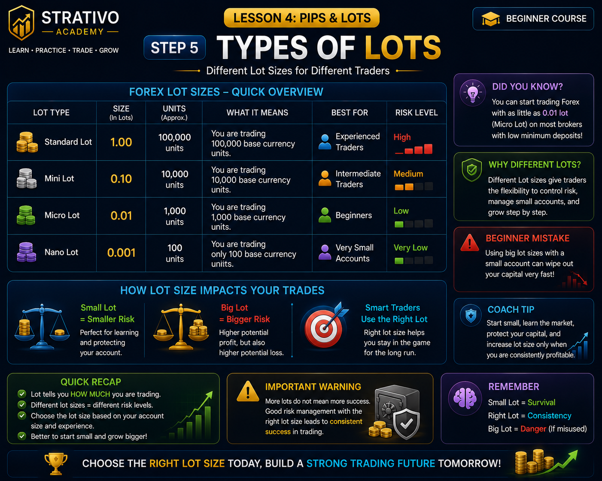
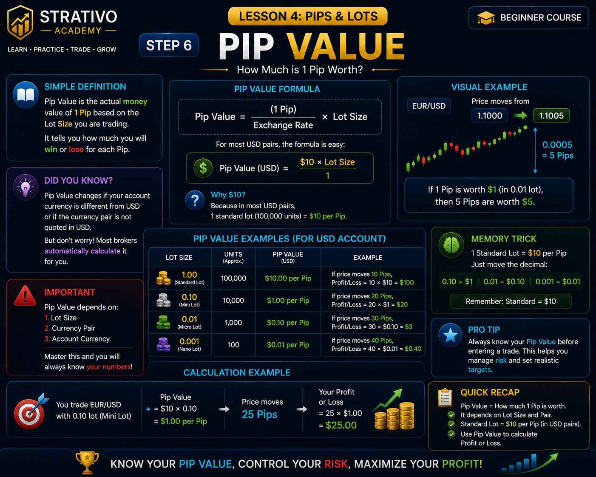
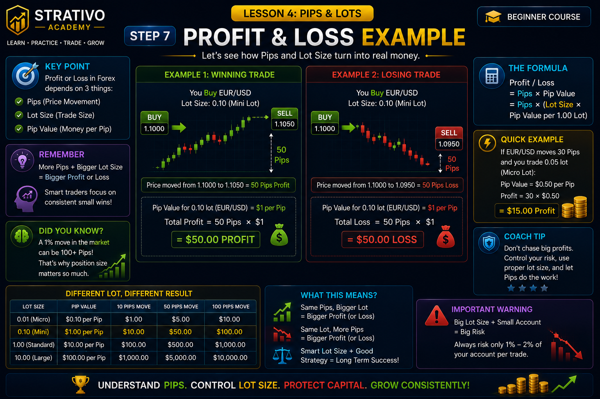
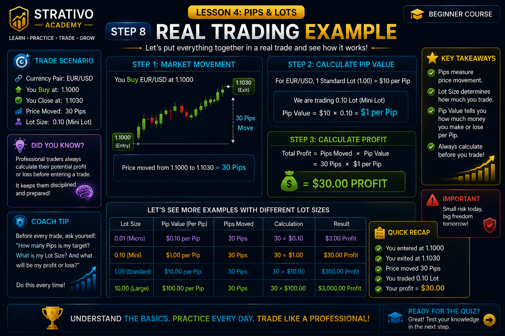
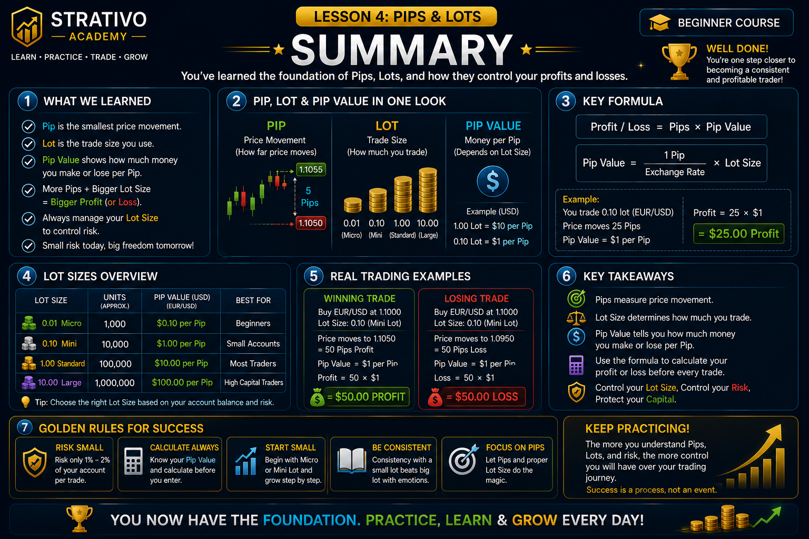

Lesson 4 - Pips & Lots
Step 1 of 10
Welcome to Lesson 4
Pips & Lots
In the previous lesson, you learned how to read Forex prices using
Bid Price,
Ask Price,
and
Spread.
Now it's time to learn how traders measure
price movement,
choose the correct
trade size,
and calculate their
profit or loss.
By the end of this lesson, you'll understand how professional traders
calculate risk before placing a trade.

📘 Simple Definition
A Pip
measures how far the market moves.
A Lot
measures how much you are trading.
Together, they determine how much money
you can make or lose.
🎯 Today's Learning Objectives
💡 Did You Know?
Two traders can enter the exact same trade but make completely different profits because they use different Lot Sizes.
⚠ Beginner Mistake
Many beginners think bigger trades always mean bigger success.
Professional traders focus on protecting their capital first by
choosing the correct
Lot Size
and managing risk.
- ✔ Understand what a Pip is
- ✔ Learn how price movement is measured
- ✔ Understand what a Lot is
- ✔ Compare different Lot Sizes
- ✔ Calculate Pip Value
- ✔ Calculate Profit & Loss
- ✔ Complete the Lesson Quiz
What is a Pip?
A Pip
(Percentage in Point) is the smallest standard
price movement in most Forex currency pairs.
Traders use Pips to measure how far the market has moved instead of
counting tiny decimal numbers.
Understanding Pips is one of the most important skills because every
profit, loss, stop loss and take profit is measured in Pips.

📘 Simple Definition
A Pip
is simply the unit used to measure
price movement
in the Forex market.
Think of it as the "distance meter" of a currency pair.
📈 Example
If EUR/USD moves from
1.1000 → 1.1005
the market has moved
5 Pips.
💡 Did You Know?
Professional traders rarely say,
"The market moved from 1.1000 to 1.1005."
Instead, they simply say,
"The market moved 5 Pips."
⚠ Beginner Mistake
Many beginners focus only on the price.
Professional traders focus on
how many Pips
the market moved because that's
how trades are planned and evaluated.
🧠 Memory Trick
Pip = Price Movement.
Whenever you hear
"20 Pips" or "50 Pips,"
think about the
distance
the price has traveled,
not the amount of money.
How Price Moves
Forex prices are always changing.
Every time the price goes up or down, the movement is measured in
Pips.
Traders use these Pip movements to calculate entries, exits, profits,
losses, stop losses and take profits.

📘 Simple Definition
Price movement is simply the distance the market travels.
The bigger the movement,
the more Pips the market has moved.
📈 Example
EUR/USD opens at
1.1000
It later reaches
1.1025
Total movement:
25 Pips
💡 Did You Know?
Some currency pairs move only 20–40 Pips in a day, while others can move 100+ Pips during high volatility.
⚠ Beginner Mistake
Beginners often chase every small price movement.
Professional traders wait for
high-quality trading opportunities
instead of trading every Pip.
🧠 Memory Trick
More Price Movement
=
More Pips
=
Bigger Profit or Bigger Loss
🎯 Pro Tip
Professional traders don't just ask,
"Will price go up?"
They ask,
"How many Pips can this trade realistically move?"
What is a Lot?
In Forex trading, a
Lot
is the standard unit used to
measure the size of your trade.
Think of a Lot as the "quantity"
of currency you are buying or selling.
The larger the Lot Size, the greater your potential profit—but also the
greater your potential loss.

📘 Simple Definition
A Lot
tells the broker
how much currency
you want to trade.
It does not
tell you the direction of the trade—
only the size.
🏪 Real-Life Example
Imagine you are buying apples.
You can buy:
🍎 1 Apple
🍎🍎 10 Apples
🍎🍎🍎 100 Apples
In Forex, instead of choosing the number of apples,
you choose the
Lot Size.
💡 Did You Know?
Professional traders rarely use the largest Lot Size.
They choose a Lot Size based on their
account balance and risk management strategy.
⚠ Beginner Mistake
Many beginners believe that using a bigger Lot Size
will help them become rich faster.
In reality, it also increases losses much faster.
🧠 Memory Trick
Pip = Distance
Lot = Trade Size
Remember:
Pips tell you
how far
Lots tell you
how much
🎯 Coach's Tip
Successful traders don't try to trade the biggest position.
They trade the
right position size
for their account.
What does a Lot Size tell you?
Select an answer to receive immediate feedback.
Types of Lot Sizes
Not every trader uses the same Lot Size.
Forex brokers offer different Lot Sizes so traders with small or large
accounts can manage their risk properly.
Choosing the correct Lot Size is one of the most important parts of
successful trading.

📘 The Four Main Lot Sizes
| Lot Type | Units | Best For |
|---|---|---|
| Standard Lot | 100,000 Units | Professional Traders |
| Mini Lot | 10,000 Units | Intermediate Traders |
| Micro Lot | 1,000 Units | Beginners |
| Nano Lot | 100 Units | Practice & Small Accounts |
💡 Did You Know?
Most professional traders risk only a small percentage of
their account on each trade.
They adjust their
Lot Size,
not their emotions.
⚠ Beginner Mistake
Many beginners open a
Standard Lot
because they want bigger profits.
Unfortunately, bigger Lot Sizes also create much bigger losses.
Always choose a Lot Size that matches your account size and risk plan.
🧠 Memory Trick
📦 Standard = Biggest
📦 Mini = Medium
📦 Micro = Small
📦 Nano = Smallest
🎯 Coach's Tip
If you're new to Forex,
Micro Lots
are usually the safest place to start.
Learn consistency first.
Bigger Lot Sizes can come later as your experience grows.
What is Pip Value?
A Pip Value
tells you how much money
you gain or lose when the market moves by
1 Pip.
The Pip Value depends mainly on your
Lot Size.
The larger the Lot Size,
the more money each Pip is worth.

📘 Simple Definition
Pip Value is the amount of money earned or lost when the market moves by one Pip.
💰 Common Pip Values
| Lot Size | Approx. Pip Value |
|---|---|
| Standard Lot | ≈ $10 per Pip |
| Mini Lot | ≈ $1 per Pip |
| Micro Lot | ≈ $0.10 per Pip |
| Nano Lot | ≈ $0.01 per Pip |
💡 Did You Know?
Two traders can capture the same 50 Pip move, but earn completely different profits because they use different Lot Sizes.
⚠ Beginner Mistake
Many beginners only look at
the number of Pips.
Professional traders always calculate
the Pip Value
before opening a trade.
🧠 Memory Trick
Bigger Lot
=
Bigger Pip Value
=
Bigger Profit
and
Bigger Loss
🎯 Coach's Tip
Never choose your Lot Size
based on how much money
you want to make.
Choose it based on how much
money you are willing to risk.
📝 Quick Recap
- ✔ Pip = Price Movement
- ✔ Lot = Trade Size
- ✔ Pip Value = Money per Pip
- ✔ Bigger Lot = Bigger Pip Value
Calculating Profit & Loss
Every Forex trade ends in either a
Profit
or a
Loss.
Your final result depends on three simple things:
✔ How many Pips the market moved
✔ Your Lot Size
✔ Your Pip Value

📘 Simple Formula
Profit / Loss
=
Pips × Pip Value
📈 Winning Trade Example
Trade:
BUY EUR/USD
Market Movement:
+25 Pips
Lot Size:
Mini Lot
Pip Value:
$1 per Pip
Profit
=
25 × $1
Profit = $25
📉 Losing Trade Example
Trade:
SELL GBP/USD
Market Movement:
-18 Pips
Lot Size:
Mini Lot
Pip Value:
$1 per Pip
Loss
=
18 × $1
Loss = $18
💡 Did You Know?
Two traders can both make 25 Pips but earn completely different profits because they use different Lot Sizes.
🧠 Memory Trick
More Pips
+
Bigger Lot
=
Bigger Profit
But remember...
Bigger Losses too!
⚠ Beginner Mistake
Beginners usually think only about
making more money.
Professional traders first calculate
how much they could lose
before entering any trade.
🎯 Coach's Tip
Never increase your Lot Size
just because your previous trade was a winner.
Stay consistent and manage risk
on every single trade.
📝 Quick Recap
- ✔ Pips measure price movement.
- ✔ Lot Size determines trade size.
- ✔ Pip Value tells how much one Pip is worth.
- ✔ Profit/Loss = Pips × Pip Value.
Complete Trading Example
Let's put everything together with a real Forex example.
By following this trade step by step, you'll see how
Pips,
Lot Size,
and
Pip Value
work together to calculate your final profit.

📊 Trade Setup
- 💱 Currency Pair: EUR/USD
- 📈 Trade Type: BUY
- 📍 Entry Price: 1.1000
- 🏁 Exit Price: 1.1035
- 📦 Lot Size: Mini Lot
- 💰 Pip Value: $1 per Pip
📝 Step-by-Step Calculation
Step 1️⃣
Entry Price:
1.1000
Exit Price:
1.1035
Total Movement:
35 Pips
Step 2️⃣
Pip Value:
$1
Step 3️⃣
Profit
=
35 × $1
Total Profit = $35
💡 Did You Know?
If the same trade used a Standard Lot instead of a Mini Lot, the same 35 Pips would produce approximately $350 profit.
⚠ Beginner Mistake
Many beginners only focus on
"How much money can I make?"
Professional traders first ask,
"How much money can I lose?"
before placing any trade.
🎯 Key Takeaways
- ✔ Pip measures price movement.
- ✔ Lot Size controls trade size.
- ✔ Pip Value determines money per Pip.
- ✔ Profit = Pips × Pip Value.
- ✔ Risk Management is more important than big profits.
🧠 Coach's Advice
Every professional trader performs these calculations
before entering a trade.
Make it a habit to calculate your
Risk,
Pip Value,
and Potential Profit
before clicking the Buy or Sell button.
🎉 You're Ready!
Congratulations!
You now understand:
✅ Pips
✅ Lot Sizes
✅ Pip Value
✅ Profit & Loss Calculation
You're ready to test your knowledge in the Lesson 4 Quiz.
📝 Lesson 4 Quiz
Test your understanding of
Pips, Lot Sizes, Pip Value, and Profit & Loss.
Answer all
10 questions.
Aim for at least
70%
to pass the Lesson 4 mastery target and prepare for
Lesson 5.
Loading Question...
📚 Before You Start
- ✔ Read every question carefully.
- ✔ Think before selecting an answer.
- ✔ Learn from the explanation after each question.
- ✔ You can retry the quiz anytime to improve your score.
💡 Learning Tip
Don't worry if you don't get a perfect score on your first attempt.
Every quiz is designed to reinforce what you've learned.
Review the explanations, retry the quiz, and aim to improve each time.
🎉 Congratulations!
You have successfully completed
Lesson 4 – Pips & Lots.
You now understand how Forex traders measure price movement,
choose the correct trade size, and calculate profits and losses.
These are essential skills that every successful Forex trader must master.

🏆 Achievement Unlocked
🎓 Beginner Level
Pips & Lots Master
You have completed Lesson 4 and now understand
how professional traders calculate trade size,
Pip Value, and Profit & Loss.
📚 What You Learned
- ✅ What a Pip is
- ✅ How price movement is measured
- ✅ What a Lot is
- ✅ Standard, Mini, Micro & Nano Lots
- ✅ What Pip Value means
- ✅ How to calculate Profit & Loss
- ✅ Real trading examples
- ✅ The importance of Risk Management
📝 Notebook Review
Before moving to Lesson 5, make sure you can answer these questions without looking at your notes.
- ✔ What is a Pip?
- ✔ What is a Lot?
- ✔ What is Pip Value?
- ✔ What is the difference between Standard and Micro Lots?
- ✔ How do you calculate Profit & Loss?
- ✔ Why is choosing the correct Lot Size important?
- ✔ Why is Risk Management important?
💡 Coach's Advice
Many beginners focus only on making bigger profits.
Professional traders focus on
protecting their capital first.
Always calculate your risk,
choose the correct Lot Size,
and understand your Pip Value
before opening any trade.
🌍 Did You Know?
Most professional traders risk only
1%–2%
of their trading account on a single trade.
Consistent risk management helps traders
survive losing streaks and stay profitable over the long term.
⚠ Before You Continue
Complete the Lesson 4 Quiz first.
Scoring at least
70%
will help confirm
your understanding of these important concepts.
🚀 Coming Up Next
Lesson 5 introduces one of the most important concepts
in Forex trading:
Leverage & Margin
- ⚡ What is Leverage?
- 💰 What is Margin?
- 📊 Margin Requirements
- ⚠ Margin Call
- 🛡 Safe Use of Leverage
— Strativo Academy